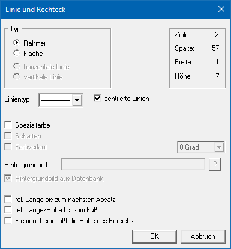
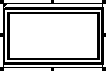
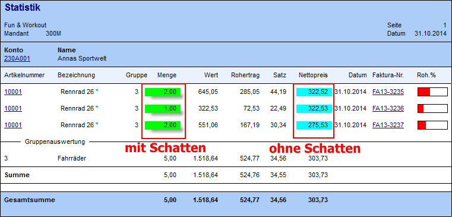
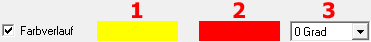
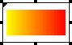

Ø Rahmen
Mit dem Button "Rahmen" lassen sich Rahmen oder Flächen auf dem Formular ablegen. Nachdem der Rahmen mit der Maus auf die gewünschte Größe und Position gezogen wurde, öffnet sich das Fenster "Linien und Rechtecke", in dem eingestellt werden kann, ob der Rahmen durchsichtig oder ausgefüllt dargestellt werden soll.
Eigenschaftsfenster "Linie und Rechteck"
Über das Eigenschaftsfenster "Linie und Rechteck" können unterschiedlichste Einstellungen für einen Rahmen und Flächen vorgenommen werden.

Ø Typ
An dieser Stelle kann definiert werden, ob das Rechteck als Rahmen oder als ausgefüllte Fläche dargestellt wird.
ü Rahmen
Es wird ein leeres
Rechteck auf dem Formular abgelegt.

ü Fläche
Es wird ein ausgefülltes
Rechteck auf dem Formular abgelegt.
Hinweis
Wenn der Typ umgestellt wird, dann sollte das Eigenschaftsfenster mit "OK" geschlossen und neu geöffnet werden.
Ø Linientyp
Aus der Auswahlbox kann der Linie eines Rahmens eine spezielle Form zugewiesen werden.

Ø zentrierte Linie
Wird diese Option aktiviert, dann wird die Linie eines Rahmens mittig / zentriert (bezogen auf die Spalte und die Zeile wo der Rahmen definiert wurde) dargestellt.
Ø Spezialfarbe
Durch Aktivieren dieser Checkbox kann die Farbe gewählt werden, in welcher die Linie des Rahmens gedruckt werden soll. Bleibt die Checkbox deaktiviert, wird die Linie schwarz dargestellt.
Hinweis
Wenn eine Farbe ausgewählt wurde, dann wird diese neben der Option dargestellt. Durch Anwahl der Farbe (hier "grün") kann diese direkt geändert werden.

Achtung
Durch die Einstellung "Farbverlauf" wird die Spezialfarbe übersteuert.
Ø Schatten
Wenn es sich um eine Fläche handelt, dann kann mit der Option "Schatten" auch ein Schatten angezeigt werden. Der Schatten unterhalb der Fläche dargestellt.
Beispiel

Ø Farbverlauf
Bei Flächen kann auch ein Farbverlauf hinterlegt werden. Dazu können mehrere Einstellungen vorgenommen werden.

ü 1 - Ausgangsfarbe
Durch einen
Klick auf die Farbe kann die gewünschte Farbe ausgesucht und übernommen
werden.
ü 2 - Zielfarbe
Durch einen
Doppelklick auf die Farbe kann die gewünschte Farbe ausgesucht und übernommen
werden.
ü 3 - Grad
Über die Auswahlbox
"Grad" kann gesteuert werden, in welche Richtung der Farbverlauf dargestellt
werden soll.
Beispiel - 0 Grad

Beispiel - 135 Grad

Ø Hintergrundbild
Wenn es sich um eine Fläche handelt, dann kann hier ein Hintergrundbild festgelegt werden. Über den Matchcode kann nach Bildern in der Windows-Umgebung oder in der WinLine Systemdatenbank (siehe Option "Hintergrundbild aus Datenbank").
Ø Hintergrundbild aus Datenbank
Durch Aktivierung dieser Checkbox werden im Matchcode des Felds "Hintergrundbild" die Grafiken angezeigt, welche sich in der WinLine Systemdatenbank befinden.
Ø rel. Länge bis zum nächsten Absatz
Diese Checkbox wird nur dann benötigt, wenn ein Rahmen bzw. eine Fläche in einem Mittelteil eingebaut wird. Dadurch wird gesteuert, dass der Rahmen bzw. die Fläche bis zum Beginn der nächsten Mittelteilszeile gedruckt wird.
Beispiel
Wenn ein Multiline-Feld angedruckt wird (z.B. ein Textbaustein), dann kann nicht definiert werden, wie lang dieses Feld ist. Aus diesem Grund wird die Option "rel. Länge bis zum nächsten Absatz" gesetzt, wodurch der Rahmen bzw. die Fläche automatisch so lange gedruckt wird, bis der Textbaustein zu Ende ist.
Ø rel. Länge/Höhe bis zum Fuß
Diese Option wird dann verwendet, wenn ein Rahmen bzw. eine Fläche im Kopfbereich eingebaut wird, welche dann aber bis zum Fußteil gedruckt werden soll. Damit wird gesteuert, dass die Linie bis zum ersten Fußteil gedruckt wird.
Ø Element beeinflusst die Höhe des Bereichs
Wenn diese Option gesetzt ist, werden die Rahmen bzw. die Flächen um eine Zeile weiter berechnet und schließen somit an die nächste Mittelteilszeile bzw. den Fußteil an. D.h. die Rahmen und Flächen müssen nicht länger als notwendig definiert werden.